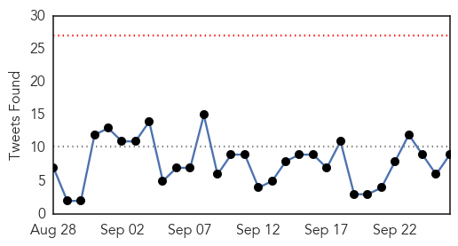
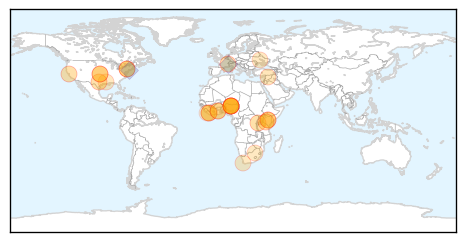

Unknown
30-Day Web Trend
0 alerts, 0 warnings
30-Day Twitter Trend
2 alerts, 0 warnings
Article Locations

Article Confidences

Top Articles:
- 0.984
- ABC-7.com WZVN News for Fort Myers, Cape Coral & Naples, Florida
- 0.982
- Starship in crisis over norovirus outbreak
- 0.954
- Bats and Skunks Trigger Rabies Alerts in North Texas
- 0.906
- Nurse's aide paralyzed by mandatory flu vaccine, awarded $11.6 million -- Health & Wellness -- Sott.net
- 0.905
- Rates of Bacteria-Borne Disease Surge Among Kansas City Children
- 0.879
- Australian doctors divided over Lyme disease diagnoses
- 0.848
- Scientists find high prevalence of Chagas disease in Texas kissing bugs – The Pump Handle
- 0.845
- C. difficile outbreak declared at St. Mary’s General Hospital
- 0.841
- CDC Takes Charge of Fig & Olive Salmonella Outbreak Investiagtion
- 0.836
- Dozens of kids diagnosed with Shigella in Kansas City
- 0.765
- Saudi authorities under fire as death-marred hajj draws to a close
- 0.765
- In pictures: treasures of French royal family to be auctioned off in Paris
- 0.761
- Thai police say detained man is indeed Bangkok bomber
- 0.747
- Islamist faces ICC trial for destroying Mali's cultural heritage
- 0.747
- France's Fabius open to Syria talks without preconditions
- 0.725
- Doctor had ‘ethical duty’ to notify hotel about HIV guest, Paphos clinic says
- 0.712
- Maternal mortality figures reduced but still too high
- 0.708
- News, Weather, Sports, Breaking News
- 0.670
- Doctors for Palawan's islands
- 0.670
- 'An uncommon presentation of Kikuchi Fujimoto disease: a case report with literature review' (BMC Research Notes)
- 0.655
- Anthrax outbreak in Bulgaria’s Obrochishte
- 0.649
- Knox County kicks off in-school flu vaccinations
- 0.641
- No Polio Cases for a Year
- 0.638
- Malaysia General Business Sports and Lifestyle News
- 0.608
- 5 corporations funding water projects
- 0.604
- Authorities Continue Investigation on E. Coli Cases in Vermont, Prompts Local Restaurant to Change Food Vendors
- 0.541
- Mecca Stampede...Pratt Commiserates With Families Of Affected Pilgrims
- 0.526
- Stomach virus going around at Hillsboro elementary school
- 0.516
- Deadly blood-sucking tick found in Richmond Park and Bushy Park
- 0.513
- Picnic Brand Cheese Spreads Recalled for Listeria
- 0.509
- KFVS12 News & Weather Cape Girardeau, Carbondale, Poplar Bluff
Top Tweets:
- 0.737
- Primary health care is the pillar of health systems & is central to controlling infectious diseases, improving women’s & children’s health
Ebola
30-Day Web Trend
0 alerts, 0 warnings

30-Day Twitter Trend
0 alerts, 0 warnings

Article Locations
Article Confidences

Top Articles:
- 0.999
- Rwanda’s Suspected Ebola Patient Tests Negative
- 0.996
- Airport Screening 'Doesn't Really Pick Up Ebola'
- 0.990
- In the Fight Against Ebola, High-Tech Microchip is the Ultimate Cure
- 0.988
- Teen wins science fair with rapid, portable Ebola test
- 0.984
- Use of Ebola Survivors’ Blood To Cure Infected Patients
- 0.961
- Kenya Airways resumes West Africa flights
- 0.952
- INTERVIEW-Liberia struggles to regain economic footing after Ebola
- 0.942
- Kenya Airways resumes West Africa flights banned due to Ebola
- 0.939
- ‘Human security depends on health security,’ Ban says, calling on nations to be proactive
- 0.934
- Legislature Bans Hunting, for Now…
- 0.933
- Study: Chip test directly identifies Ebola virus
- 0.838
- New global drive to step up healthcare delivery
- 0.814
- Polio is gone from Nigeria, WHO says
- 0.786
- New partnership to help countries close gaps in primary health care
- 0.775
- How Surgery Can Fight Global Poverty
- 0.727
- WHO Takes Nigeria Off Global List Of Polio-Endemic Countries
- 0.725
- S. Africa to co-host China-Africa health forum
- 0.722
- Protecting Apes Could Backfire
- 0.713
- S. Africa to co-host China-Africa health forum - Xinhua
- 0.710
- WHO takes Nigeria off global list of polio-endemic countries
- 0.707
- WHO takes Nigeria off global list of polio-endemic countries
- 0.701
- WHO takes Nigeria off global list of polio-endemic countries, World News & Top Stories
- 0.698
- WHO takes Nigeria off global list of polio-endemic countries
- 0.677
- Nigeria taken off list of polio-endemic countries
- 0.654
- World Health Organization takes Nigeria off global list of polio-endemic countries
- 0.622
- WHO cuts Nigeria from polio list
- 0.609
- US partners FG on enhancing health emergency response
- 0.545
- THE WOMAN DR. ADADEVOH!E24-7 Magazine
- 0.510
- LIBERIA: Red Cross Reports Drop In Ebola Death Rate
Top Tweets:
- 0.986
- Study: Chip test directly identifies Ebola virus - CIDRAP http://t.co/AvP3zjtajS ebola EVD
- 0.960
- Securing Europe's health: Ebola scourge leaves lasting questions - Politico http://t.co/guEW6muvXR ebola EVD
- 0.904
- Shelley making progress on Ebola in Africa with CDC - Kokomo Tribune http://t.co/8s6w0gmz2Q ebola EVD
- 0.856
- Teen Wins Science Fair With Rapid, Portable Ebola Test - Dallas Morning News (blog) http://t.co/0m1Yc73nkO ebola EVD
- 0.850
- American doctor cured of Ebola continues his work in Liberia - Lowell Sun http://t.co/dFN53no5MI ebola EVD
- 0.802
- Dr Chan: Ebola made people realise the importance of people—centred resilient health systems, to deliver on all health needs GlobalGoals
- 0.770
- No Ebola found in year of screening at O'Hare, other airports - Chicago Sun-Times http://t.co/cWoYh2H0hq ebola EVD
- 0.765
- RT: Dr Chan: Ebola made people realise the importance of people—centred resilient health systems, to deliver on all health needs Glo…
- 0.752
- Guinea celebrates victory over Ebola with concert - 3News NZ http://t.co/YPhP2madHL ebola EVD
- 0.745
- Seattle is hub of innovation in combating infectious diseases like Ebola - The Seattle Times http://t.co/1jwBpGR2Ed ebola EVD
- 0.533
- Ebola Chip Will Help Doctors Contain Future Outbreaks - Gizmodo Australia http://t.co/OsR6dYKQIF
- 0.531
- Le survivant d'Ebola Abdul Richard pose en photo avec le personnel de… https://t.co/5bB7rsnALZ